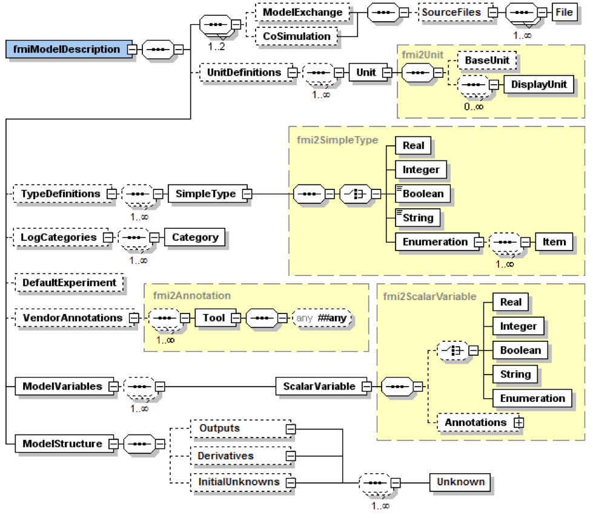

FMI Description Schema
All static information related to an FMU is stored in the text file modelDescription.xml
in XML format.
Especially, the FMU variables and their attributes such as name, unit,
default initial value, etc. are stored in this file.
The structure of this XML file is defined with the schema file `"fmiModelDescription.xsd`".
This schema file utilizes the following helper schema files:
fmi2Annotation.xsd
fmi2AttributeGroups.xsd
fmi2ScalarVariable.xsd
fmi2Type.xsd
fmi2VariableDependency.xsd
fmi2Unit.xsd
In this section these schema files are discussed. The normative definition are the above mentioned schema files [1]. Below, optional elements are marked with a "dashed" box. The required data types (like: xs:normalizedString) are defined in the XML-schema standard: http://www.w3.org/TR/XMLschema-2/. The types used in the fmi2 schema files are:
XML |
Description (http://www.w3.org/TR/XMLschema-2/) |
Mapping to C |
xs:double |
IEEE double-precision 64-bit floating point type [In order to not loose precision,
a number of this type should be stored on an XML file with at least 16 significant digits; for example, 2/3 should be stored as |
double |
xs:int |
Integer number with maximum value 2147483647 and minimum value -2147483648 (32 bit Integer) |
int |
xs:unsignedInt |
Integer number with maximum value 4294967295 and minimum value 0 (unsigned 32 bit Integer) |
unsigned int |
xs:boolean |
Boolean number. Legal literals: false, true, 0, 1 |
char |
xs:string |
Any number of characters |
char* |
xs:normalizedString |
String without carriage return, line feed, and tab characters |
char* |
xs:dateTime |
Date, time and time zone (for details see the link above). Example: 2002-10-23T12:00:00Z (noon on October 23, 2002, Greenwich Mean Time) |
tool specific |
The first line of an XML file, such as modelDescription.xml,
must contain the encoding scheme of the XML file.
It is required that the encoding scheme is always UTF-8:
<?xml version="1.0" encoding="UTF-8"?>The FMI schema files (*.xsd) are also stored in "UTF-8".
[Note that the definition of an encoding scheme is a prerequisite
in order for the XML file to contain letters outside of the 7 bit ANSI ASCII character set,
such as German umlauts, or Asian characters. Furthermore,
note the FMI calling interface requires that strings are encoded in UTF-8.
Since the XML files are also required to be encoded in UTF-8,
string variables need not to be transformed when reading from the XML files in to C string variables.].
The special values NAN, +INF, -INF for variables values are not allowed in the FMI XML files.
ordered lists according to document order,
whereas attribute information items are unordered sets (see http://www.w3.org/TR/XML-infoset/#infoitem.element).
The FMI schema is based on ordered lists in a sequence and therefore parsing must preserve this order.
For example, the information stored in ModelVariables.Derivatives is only correct if this property is fulfilled.]
Definition of an FMU (fmiModelDescription)
This is the root-level schema file and contains the following definition (the figure below contains all elements in the schema file. Data is defined by attributes to these elements):

On the top level, the schema consists of the following elements (see figure above [2]):
| Element-Name | Description |
|---|---|
|
If present, the FMU is based on "FMI for Model Exchange" [(in other words, the FMU includes the model or the communication to a tool that provides the model, and the environment provides the simulation engine)]. |
|
If present, the FMU is based on "FMI for Co-Simulation" and the simulation engine, or a communication to a tool that provides the model and the simulation engine, and the environment provides the master algorithm to run coupled FMU co-simulation slaves together)]. |
|
A global list of unit and display unit definitions [for example, to convert display units into the units used in the model equations]. These definitions are used in the XML element `"ModelVariables`". |
|
A global list of type definitions that are utilized in `"ModelVariables`". |
|
A global list of log categories that can be set to define the log information that is supported from the FMU. |
|
Providing default settings for the integrator, such as stop time and relative tolerance. |
|
Additional data that a vendor might want to store and that other vendors might ignore. |
|
The central FMU data structure defining all variables of the FMU that are visible/accessible via the FMU functions. |
|
Defines the structure of the model. Especially, the ordered lists of all outputs, all continuous-time states and all initial unknowns (the unknowns during Initialization Mode) must be defined here. For more details on ModelStructure, see section Definition of the Model Structure (ModelStructure). Furthermore, the dependency of the unkowns from the knowns can be optionally defined. [This information can be, for example, used to compute efficiently a sparse Jacobian for simulation, or to utilize the input/output dependency in order to detect that in some cases there are actually no algebraic loops when connecting FMUs together]. |
At least one element of ModelExchange or CoSimulation must be present to identify the type of the FMU.
If both elements are defined, different types of models are included in the FMU.
The details of these elements are defined in section 3.3.1 and section 4.3.1.
The XML attributes of fmiModelDescription are:

| Attribute-Name | Description |
|---|---|
|
Version of "FMI for Model Exchange or Co-Simulation" that was used to generate the XML file.
The value for this version is "2.0". |
|
The name of the model as used in the modeling environment that generated the XML file, such as "Modelica.Mechanics.Rotational.Examples.CoupledClutches". |
|
The "Globally Unique IDentifier" is a string that is used to check that the XML file is compatible with the C functions of the FMU. Typically when generating the XML file, a fingerprint of the "relevant" information is stored as guid and in the generated C function. |
|
Optional string with a brief description of the model. |
|
Optional string with the name and organization of the model author. |
|
Optional version of the model, for example, "1.0". |
|
Optional information on the intellectual property copyright for this FMU. |
|
Optional information on the intellectual property licensing
for this FMU. |
|
Optional name of the tool that generated the XML file. |
|
Optional date and time when the XML file was generated.
The format is a subset of "xs:dateTime" and should be: "YYYY-MM-DDThh:mm:ssZ" (with one "T" between date and time; "Z" characterizes the Zulu time zone,
in other words, Greenwich meantime). |
|
Defines whether the variable names in - - |
|
The (fixed) number of event indicators for an FMU based on FMI for Model Exchange. |
[The attribute numberOfContinuousStates available in FMI 1.0 has been removed for FMI 2.0,
since this information can be deduced from the remaining data in the XML file.]
Definition of Units (UnitDefinitions)
[In this section, the units of the variables are (optionally) defined. Unit support is important for technical systems since otherwise it is very easy for errors to occur. Unit handling is a difficult topic, and there seems to be no method available that is really satisfactory for all applications, such as unit check, unit conversion, unit propagation or dimensional analysis. In FMI, a pragmatic approach is used that takes into account that every software system supporting units has potentially its own specific technique to describe and utilize units. The approach used here is slightly different than FMI 1.0 to reduce the need for standardized string representations.]
Element "UnitDefinitions" of fmiModelDescription is defined as:
It consists of zero or more Unit definitions [3].
A Unit is defined by its name attribute such as "N.m" or "N*m" or "Nm",
which must be unique with respect to all other defined elements of the UnitDefinitions list.
If a variable is associated with a Unit,
then the value of the variable has to be provided with the fmi2SetXXX functions and is returned by the fmi2GetXXX functions with respect to this Unit.
[The purpose of the name is to uniquely identify a unit and,
for example, use it to display the unit in menus or in plots.
Since there is no standard to represent units in strings,
and there are different ways how this is performed in different tools,
no specific string representation of the unit is required.]
Optionally, a value given in unit Unit can be converted to a value with respect to unit BaseUnit utilizing the conversion factor and offset attributes:

Besides factor and offset,
the BaseUnit definition consists of the exponents of the 7 SI base units "kg",
"m", "s", "A", "K", "mol", "cd", and of the exponent of the SI derived unit "rad".
[Depending on the analysis/operation carried out,
the SI derived unit "rad" is or is not utilized, see discussion below.
The additional "rad" base unit helps to handle the often occurring quantities in technical systems that depend on an angle.]
A value with respect to Unit (abbreviated as "Unit_value") is converted with respect to BaseUnit (abbreviated as "BaseUnit_value") by the equation:
BaseUnit_value = factor* Unit_value + (if relativeQuantity then 0 else offset)
where factor and offset are attributes of the <BaseUnit>, and relativeQuantity an attribute of the TypeDefinition of a variable.
[For example, if \(\color{blue}{p_{bar}}\) is a pressure value in unit "bar", and \(\color{blue}{p_{Pa}}\) is the pressure value in BaseUnit, then
\(\color{blue}{p_{Pa} = 10^5 p_{bar}}\)
and therefore, factor = 1.0e5 and offset = 0.0.
[In the following table several unit examples are given
(Note that if in column "exponents" the definition "\(\color{blue}{kgm^2 / s^2}\)"
is present, then the attributes of BaseUnit are: `"kg=1, m=2, s=-2`"):
Quantity |
Unit.name |
Unit.BaseUnit |
||
exponents |
factor |
offset |
||
Torque |
|
\(\color{blue}{kg \cdot m^2 / s^2}\) |
|
|
Energy |
|
\(\color{blue}{kg \cdot m^2 / s^2}\) |
|
|
Pressure |
|
\(\color{blue}{\frac{kg}{m \cdot s^2}}\) |
|
|
Angle |
|
|
|
|
Angular velocity |
|
|
|
|
Angular velocity |
|
|
|
|
Frequency |
|
|
|
|
Temperature |
|
|
|
|
Per cent by length |
|
|
|
|
Parts per million |
|
|
|
|
Length |
|
|
|
|
Length |
|
|
|
|
Note that "Hz" is typically used as Unit.name for a frequency quantity,
but it can also be used as DisplayUnit for an angular velocity quantity (since `"revolution/s`").]
The BaseUnit definitions can be utilized for different purposes (the following application examples are optional and a tool may also completely ignore the Unit definitions):
Signal connection check:
When two signals v1 and v2 are connected together,
and on at least one of the signals no BaseUnit element is defined,
then the connection equation "v2 = v1" holds (if v1 is an output of an FMU and v2 is an input of another FMU,
with fmi2GetXXX the value of v1 is inquired and used as value for v2 by calling fmi2SetXXX).
When two signals v1 and v2 are connected together,
and for both of them BaseUnit elements are defined,
then they must have identical exponents of their BaseUnit.
If factor and offset are also identical,
again the connection equation "v2 = v1" holds.
If factor and offset are not identical,
the tool may either trigger an error or, if supported, perform a conversion;
in other words, use the connection equation (in this case the relativeQuantity of the TypeDefinition,
see below,
has to be taken into account in order to determine whether offset shall or shall not be utilized):
factor(v1) * v1 + (if relativeQuantity(v1) then 0 else offset(v1)) = factor(v2) * v2 + (if relativeQuantity(v2) then 0 else offset(v2))
where relativeQuantity(v1) == relativeQuantity(v2) is required.
_As a result, wrong connections can be detected (for example, connecting a force with an angle signal would trigger an error) and conversions between, say, US and SI units can be either automatically performed or, if not supported, an error is triggered as well.
[Note that this approach is not satisfactory for variables belonging to different quantities that have,
however, the same BaseUnit, such as quantities "Energy" and "Torque",
or "AngularVelocity" and "Frequency".
To handle such cases, quantity definitions have to be taken into account (see TypeDefinitions) and quantity names need to be standardized.]
This approach allows a general treatment of units,
without being forced to standardize the grammar and allowed values for units (for example, in FMI 1.0,
a unit could be defined as "N.m" in one FMU and as "N*m" in another FMU, and a tool would have to reject a connection,
since the units are not identical. In FMI 2.0, the connection would be accepted,
provided both elements have the same BaseUnit definition).
Dimensional analysis of equations:
In order to check the validity of equations in a modeling language,
the defined units can be used for dimensional analysis,
by using the BaseUnit definition of the respective unit.
For this purpose, the BaseUnit "rad" has to be treated as "1".
Example:
J*α = τ → [kg.m2]*[rad/s2] = [kg.m2/s2]). // o.k. ("rad" is treated as "1")
J*α = f → [kg.m2]*[rad/s2] = [kg.m/s2]). // error, since dimensions do not agree
Unit propagation:
If unit definitions are missing for signals,
they might be deduced from the equations where the signals are used.
If no unit computation is needed, "rad" is propagated.
If a unit computation is needed and one of the involved units has "rad" as a BaseUnit,
then unit propagation is not possible.
Examples:
-
a = b + c, and
Unitof c is provided, but notUnitof a and b:
The Unit definition of c (in other words,Unit.name,BaseUnit,DisplayUnit) is also used for a and b. For example, if BaseUnit(c) = "rad/s", then BaseUnit(a) = BaseUnit(b) = "rad/s". -
a = b*c, and
Unitof a and of c is provided, but notUnitof b:
If "rad" is either part of theBaseUnitof "a" and/or of "c", then theBaseUnitof b cannot be deduced (otherwise it can be deduced). Example: If BaseUnit(a)="kg.m/s2" and BaseUnit(c)="m/s2", then the BaseUnit(b) can be deduced to be "kg". In such a caseUnit.nameof b cannot be deduced from theUnit.nameof a and c, and a tool would typically construct theUnit.nameof b from the deducedBaseUnit.]
Additionally to the unit definition, optionally a set of display units can be defined that can be utilized for input/output of a value:
A DisplayUnit is defined by name, factor and offset.
The attribute name must be unique with respect to all other names of the DisplayUnit definitions of the same Unit [(different Unit elements may have the same DisplayUnit names)].
A value with respect to Unit (abbreviated as "Unit_value") is converted with respect to DisplayUnit (abbreviated as "DisplayUnit_value") by the equation:
DisplayUnit_value = factor * Unit_value + offset
["offset" is, for example, needed for temperature units.]
[For example, if \(\color{blue}{T_K}\) is the temperature value of Unit.name (in "K") and \(\color{blue}{T_F}\) is the temperature value of DisplayUnit (in "°F"),
then
and therefore, factor = 1.8 (=9/5) and offset = -459.67 (= 32 - 273.15*9/5).
Both the DisplayUnit.name definitions as well as the Unit.name definitions are used in the ScalarVariable elements.
Example for a definition:
<Unit name="rad/s">
<BaseUnit s="-1" rad="1"/>
<DisplayUnit name="deg/s" factor= "57.29577951308232"/>
<DisplayUnit name="rev/min" factor= "9.549296585513721"/>
</Unit>
<Unit name="bar">
<BaseUnit kg="1", m="-1", s="-2", factor="1.0e5", offset="0"/>
</Unit>
<Unit name="Re">
<BaseUnit/> // unit = "1"
//(dimensionless, all exponents of BaseUnit are zero)
</Unit>
<Unit name="Euro/PersonYear"/> // no mapping to BaseUnit defined]
The schema definition is present in a separate file `"fmi2Unit.xsd`".
Definition of Types (TypeDefinitions)
Element "TypeDefinitions" of fmiModelDescription is defined as:
This element consists of a set of "SimpleType" definitions according to schema "fmi2SimpleType" in file "fmi2Type.xsd".
One "SimpleType" has a type "name" and "description" as attributes.
Attribute "name" must be unique with respect to all other elements of the TypeDefinitions list.
Furthermore,
"name" of a "SimpleType" must be different to all "name" attributes of ScalarVariables [if the same names would be used,
then this would nearly always give problems when importing the FMU in an environment such as Modelica,
where a type name cannot be used as instance name].
Additionally, one of the elements Real, Integer, Boolean, String,
or Enumeration must be present.
They have the following definitions:
[The attributes of "Real" and "Integer" are collected in the attribute groups "fmi2RealAttributes" and "fmi2IntegerAttributes" in file "fmi2AttributeGroups.xsd",
since these attributes are reused in the ScalarVariable element definitions below.]

These definitions are used as default values in element ScalarVariables
[in order that, say,
the definition of a "Torque" type does not have to be repeated over and over again].
The attributes and elements have the following meaning:
| Name | Description |
|---|---|
quantity |
Physical quantity of the variable. [For example, "Angle", or "Energy". The quantity names are not standardized] |
unit |
Unit of the variable defined with |
displayUnit |
Default display unit. The conversion to the |
relativeQuantity |
If this attribute is |
min |
Minimum value of variable (variable value ≥ |
max |
Maximum value of variable (variable value ≤ |
nominal |
Nominal value of variable.
If not defined and no other information about the nominal value is available,
then nominal = 1 is assumed. |
unbounded |
If true,
indicates that during time integration, the variable gets a value much larger than its nominal value |
Item |
Item of an enumeration has a sequence of |
[Attributes min and max can be set for variables of type Real, Integer or Enumeration.
The question is how fmi2SetReal, fmi2SetInteger, fmi2GetReal,
fmi2GetInteger shall utilize this definition.
There are several conflicting requirements:
Avoiding forbidden regions
(for example, if "u" is an input and "sqrt(u)" is computed in the FMU,
min=0 on "u" shall guarantee that only values of "u" in the allowed regions are provided).
Numerical algorithms
(ODE-solver, optimizers. nonlinear solvers) do not guarantee constraints.
If a variable is outside of the bounds, the solver tries to bring it back into the bounds.
As a consequence,
calling fmi2GetReal during an iteration of such a solver might return values that are not in the defined min/max region.
After the iteration is finalized,
it is only guaranteed that a value is within its bounds up to a certain numerical precision.
In debug mode checks on min/max should be performed.
For maximum performance on a real-time system the checks might not be performed.
The approach in FMI is therefore that min/max definitions are an information from the FMU to the environment defining the region in which the FMU is designed to operate.
The environment is free to utilize this information
(typically, in debug mode of the environment the min/max is checked in the cases as stated above).
In any case,
it is expected that the FMU handles variables appropriately where the region definition is critical.
For example,
dividing by an input (so the input should not be in a small range of zero) or taking the square root of an input (so the input should not be negative) may either result in fmi2Error,
or the FMU is able to handle this situation in other ways.
If the FMU is generated so that min/max shall be checked whenever meaningful (for example, for debug purposes), then the following strategy should be used:
If fmi2SetReal or fmi2SetInteger is called violating the min/max attribute settings of the corresponding variable,
the following actions are performed:
-
On a fixed or tunable parameter
fmi2Status = fmi2Discardis returned. -
On an input, the FMU decides what to return (If no computation is possible, it could return
fmi2Status = fmi2Discard, in other situations it may returnfmi2Warningorfmi2Error, orfmi2OK, if it is uncritical).
If an FMU defines min/max values for Integer and Enumerations (local and output variables),
then the expected behavior of the FMU is that fmi2GetInteger returns values in the defined range.
If an FMU defines min/max values for Reals,
then the expected behavior of the FMU is that fmi2GetReal returns values at the solution (accepted steps of the integrators) in the defined range with a certain uncertainty related to the tolerances of the numerical algorithms.]
Definition of Log Categories (LogCategories)
Element "LogCategories" of "fmiModelDescription is defined as:

LogCategories defines an unordered set of category strings that can be utilized to define the log output via function "logger", see section 2.1.5.
A tool is free to use any normalizedString for a category value.
The "name" attribute of "Category" must be unique with respect to all other elements of the LogCategories list.
There are the following standardized names for "Category" and these names should be used if a tool supports the corresponding log category.
If a tool supports one of these log categories and wants to expose it,
then an element Category with this name should be added to LogCategories [To be clear, only the Category names listed under LogCategories in the XML file are known to the environment in which the FMU is called.]
| Category name | Description |
|---|---|
|
Log all events (during initialization and simulation). |
|
Log the solution of linear systems of equations if the solution is singular (and the tool picked one solution of the infinitely many solutions). |
|
Log the solution of nonlinear systems of equations. |
|
Log the dynamic selection of states. |
|
Log messages when returning fmi2Warning status from any function. |
|
Log messages when returning fmi2Discard status from any function. |
|
Log messages when returning fmi2Error status from any function. |
|
Log messages when returning fmi2Fatal status from any function. |
|
Log messages when returning fmi2Pending status from any function. |
logAll |
Log all messages. |
The optional attribute description shall contain a description of the respective log category.
[Typically, this string can be shown by a tool if more details for a log category shall be presented.]
[This approach to define LogCategories has the following advantages:
-
A simulation environment can present the possible log categories in a menu and the user can select the desired one (in the FMI 1.0 approach, there was no easy way for a user to figure out from a given FMU what log categories could be provided).
[Note that since element <LogCategories> is optional,
an FMU does not need to expose its log categories.]
-
The log output is drastically reduced, because via
fmi2SetDebugLoggingexactly the categories are set that shall be logged and therefore the FMU only has to print the messages with the corresponding categories to the"logger"function. In FMI 1.0, it was necessary to provide all log output of the FMU to the"logger"and then a filter in the"logger"could select what to show to the end-user. The approach introduced in FMI 2.0 is therefore much more efficient.]
Definition of a Default Experiment (DefaultExperiment)
Element "DefaultExperiment" of fmiModelDescription is defined as:

DefaultExperiment consists of the optional default start time,
stop time, relative tolerance, and step size for the first simulation run.
A tool may ignore this information.
However, it is convenient for a user that startTime, stopTime,
tolerance and stepSize have already a meaningful default value for the model at hand.
Furthermore, for CoSimulation the stepSize defines the preferred communicationStepSize.
Definition of Vendor Annotations (VendorAnnotations)
Element "VendorAnnotations" of fmiModelDescription is defined as:

VendorAnnotations consist of an ordered set of annotations that are identified by the name of the tool that can interpret the "any" element.
The "any" element can be an arbitrary XML data structure defined by the tool.
Attribute "name" must be unique with respect to all other elements of the VendorAnnotation list.
Definition of Model Variables (ModelVariables)
The "ModelVariables" element of fmiModelDescription is the central part of the model description.
It provides the static information of all exposed variables and is defined as:
The "ModelVariables" element consists of an ordered set of ScalarVariable elements (see figure above).
The first element has index = 1,
the second index=2, etc.
This ScalarVariable index is used in element ModelStructure to uniquely and efficiently refer to ScalarVariable definitions.
A ScalarVariable represents a variable of primitive type, like a real or integer variable.
For simplicity,
only scalar variables are supported in the schema file in this version and structured entities (like arrays or records) have to be mapped to scalars.
The schema definition is present in a separate file fmi2ScalarVariable.xsd.
The attributes of ScalarVariable are:

| Attribute-Name | Description |
|---|---|
|
The full, unique name of the variable.
Every variable is uniquely identified within an FMU instance by this name or by its |
|
A handle of the variable to efficiently identify the variable value in the model interface.
This handle is a secret of the tool that generated the C functions.
It is not required to be unique.
The only guarantee is that valueReference is sufficient to identify the respective variable value in the call of the C functions.
This implies that it is unique for a particular base data type
( |
|
An optional description string describing the meaning of the variable. |
|
Enumeration that defines the causality of the variable. Allowed values of this enumeration: - - - - - - The default of causality is [ |
|
Enumeration that defines the time dependency of the variable,
in other words, it defines the time instants when a variable can change its value.
[The purpose of this attribute is to define when a result value needs to be inquired and to be stored.
For example, discrete variables change their values only at event instants (ModelExchange) or at a communication point (CoSimulation) and it is therefore only necessary to inquire them with - - - - - The default is [Note that the information about continuous states is defined with element
|
|
Enumeration that defines how the variable is initialized.
It is not allowed to provide a value for - = - = - = If [The environment decides when to use the start value of a variable with If |
|
|
Only for ModelExchange (if only CoSimulation FMU, this attribute must not be present.
If both ModelExchange and CoSimulation FMU, this attribute is ignored for CoSimulation): |
|
fmi2SetXXX can be called on any variable with variability ≠ "constant" before initialization (before calling fmi2EnterInitializationMode)
-
if
initial = "exact"or"approx"[in order to set the correspondingstartvalue.] [Note that this prevents any changes to the input beforefmi2EnterInitializationModeis called.]
fmi2SetXXX can be called on any variable with variability ≠ "constant" during initialization (after calling fmi2EnterInitializationMode and before fmi2ExitInitializationMode is called)
-
if
initial = "exact"[in order to set the correspondingstartvalue], or -
if
causality = "input"[in order to provide new values for inputs],
fmi2SetXXX can be called on any variable for ModelExchange at an event instant (after calling fmi2EnterEventMode and before fmi2EnterContinuousTimeMode is called),
and for Co-Simulation at every communication point,
-
if
causality = "parameter"andvariability = "tunable"[in order to change the value of the tunable parameter at an event instant or at a communication point], or -
if causality = "input" [in order to provide new values for inputs]
fmi2SetXXX can be called on any variable for ModelExchange in Continuous-Time Mode
-
if
causality = "input"andvariability = "continuous"
[in order to provide new values for inputs during continuous integration]
If initial is not present, its value is defined by the following tables
based on the values of causality and variability:
causality |
||||||||
parameter |
calculated parameter |
input |
output |
local |
independent |
|||
variability |
data |
constant |
-- |
-- |
-- |
(A) |
(A) |
-- |
fixed |
(A) |
(B) |
-- |
-- |
(B) |
-- |
||
tunable |
(A) |
(B) |
-- |
-- |
(B) |
-- |
||
signals |
discrete |
-- |
-- |
(D) |
(C) |
(C) |
-- |
|
continuous |
-- |
-- |
(D) |
(C) |
(C) |
(E) |
||
with
initial |
||
default |
possible values |
|
(A) |
exact |
exact |
(B) |
calculated |
approx, |
(C) |
calculated |
exact, |
(D) |
--- |
--- |
(E) |
--- |
--- |
[Note: (1) If causality = "independent",
it is neither allowed to define a value for initial nor a value for start.
(2) If causality = "input",
it is not allowed to define a value for initial and a value for start must be defined.
(3) If (C) and initial = "exact",
then the variable is explicitly defined by its start value in Initialization Mode (so directly after calling fmi2ExitInitializationMode,
the value of the variable is either the start value stored in element <ScalarVariable><XXX start=YYY/>
or the value provided by fmiSetXXX,
if this function was called on this variable).]
The following combinations of variability/causality settings are allowed:
causality |
||||||||
parameter |
calculated parameter |
input |
output |
local |
independent |
|||
variability |
data |
constant |
-- (a) |
-- (a) |
-- (a) |
(7) |
(10) |
-- (c) |
fixed |
(1) |
(3) |
-- (d) |
-- (e) |
(11) |
-- (c) |
||
tunable |
(2) |
(4) |
-- (d) |
-- (e) |
(12) |
-- (c) |
||
signals |
discrete |
-- (b) |
-- (b) |
(5) |
(8) |
(13) |
--(c) |
|
continuous |
-- (b) |
-- (b) |
(6) |
(9) |
(14) |
(15) |
||
Discussion of the combinations that are not allowed:
Explanation why this combination is not allowed |
|
(a) |
The combinations |
(b) |
The combinations |
(c) |
For an |
(d) |
A |
(e) |
A |
Discussion of the combinations that are allowed:
| Setting | Example | |
|---|---|---|
(1) |
fixed parameter |
Non-tunable independent parameter |
(2) |
tunable parameter |
Tunable independent parameter (changing such a parameter triggers an external event (ModelExchange) or takes effect at the next Communication Point (CoSimulation), and tunable calculatedParameter/output/local variables might change their values). |
(3) |
fixed dependent parameter |
Non-tunable dependent parameter (variable that is computed directly or indirectly from constants or parameters). |
(4) |
tunable dependent parameter |
Tunable dependent parameter (changing an independent parameter triggers an external event (ModelExchange) or takes effect at the next Communication Point (CoSimulation), and tunable dependent parameters and tunable local variables might change their values). |
(5) |
discrete input |
Discrete input variable from another model. |
(6) |
continuous input |
Continuous input variable from another model. |
(7) |
constant output |
Variable where the value never changes and that can be used in another model. |
(8) |
discrete output |
Discrete variable that is computed in the FMU. Can be used in another model. |
(9) |
continuous output |
Continuous variable that is computed in the FMU and can be used in another model. |
(10) |
constant local |
Variable where the value never changes. Cannot be used in another model. |
(11) |
fixed local |
Local variable that depends on fixed parameters only and is computed in the FMU. Cannot be used in another model. After initialization, the value of this local variable cannot change. |
(12) |
tunable local |
Local variable that depends on tunable parameters only and is computed in the FMU. Cannot be used in another model. The value of this local variable can only change during initialization and at event instants, provided a tunable parameter was changed. |
(13) |
discrete local |
Discrete variable that is computed in the FMU and cannot be used in another model. |
(14) |
continuous local |
Continuous variable that is computed in the FMU and cannot be used in another model. |
(15) |
continuous independent |
All variables are a function of the continuous-time variable marked as |
How to treat tunable variables:
A parameter p is a variable that does not change its value during simulation, in other words, dp/dt = 0. If the parameter "p" is changing, then Dirac impulses are introduced since dp/dt of a discontinuous constant variable "p" is a Dirac impulse. Even if this Dirac impulse would be modeled correctly by the modeling environment, it would introduce unwanted "vibrations". Furthermore, in many cases the model equations are derived under the assumption of a constant value (like mass or capacity), and the model equations would be different if "p" would be time varying.
FMI for Model Exchange:
Therefore,
"tuning a parameter" during simulation does not mean to "change the parameter online" during simulation.
Instead, this is a short hand notation for:
-
Stop the simulation at an event instant (usually, a step event, in other words, after a successful integration step).
-
Change the values of the tunable parameters.
-
Compute all parameters that depend on the tunable parameters.
-
Newly start the simulation using as initial values the current values of all previous variables and the new values of the parameters.
Basically this means that a new simulation run is started from the previous FMU state with changed parameter values. With this interpretation, changing parameters online is "clean", as long as these changes appear at an event instant.
FMI for Co-Simulation:
Changing of tunable parameters is allowed before an fmi2DoStep call (so, whenever an input can be set with fmi2SetXXX) and before fmi2ExitInitializationMode is called (that is before and during Initialization Mode).
The FMU internally carries out event handling if necessary.]
Variables of the same base type (like fmi2Real) that have identical valueReference definitions are called "alias" variables.
The main purpose of "alias" variables is to enhance efficiency.
If two variables a and b are alias variables,
then this is only allowed if the behavior of the FMU would be exactly the same
if a and b were not treated as alias variables (that is,
had different valueReferences).
This requirement leads naturally to the following restrictions:
-
Variables
aandbthat can both be set withfmi2SetXXX, or variableathat can be set withfmiSetXXXand variablebthat is defined withcausality = "independent", cannot be alias variables [since these variables are"independent"variables and alias means that there is a constraint equation between variables (= the values are the same), these variables are no longer"independent".
For example, if variablesaandbhavecausality = "parameter", then the value references ofaandbmust be different. However, if variable a hascausality = "parameter"andbhascausality = "calculatedParameter"andb := a, thenaandbcan have the same value reference.]. -
At most one variable of the same alias set of variables with
variability ≠ "constant"can have a start attribute. -
A variable with
variability = "constant"can only be aliased to another variable withvariability = "constant". It is then required that the start values of all aliased (constant) variables are identical. -
All variables of the same alias set must all have either no
<Unit>element defined, or all of them must have the same<Unit name>and the same<Unit><BaseUnit>definitions.
The aliasing of variables only means that the "value" of the variables is always identical.
However, aliased variables may have different attributes,
such as min/max/nominal values or description texts.
[For example, if v1, v2 are two alias variables with v1=v2 and v1.max=10 and v2.max=5,
then the FMU will trigger an error if either v1 or v2 becomes larger than 5.]
[The dependency definition in fmiModelDescription.ModelStructure is completely unrelated to the alias definition.
In particular,
the "direct dependency" definition can be a superset of the "real" direct dependency definition,
even if the "alias" information shows that this is too conservative.
For example, if it is stated that the output y1 depends on input u1 and the output y2 depends on input u2,
and y1 is an alias to y2, then this definition is fine,
although it can be deduced that in reality neither y1 nor y2 depend on any input.].
[In case of different variability among the set of alias variables, and if that set of aliases does not contain an input or parameter, the variability should be the highest of the variables in the set, e.g. continuous > discrete > tunable >fixed. If the set includes a parameter or input the aliases will have the stated variability of that parameter or input].
Type specific properties are defined in the required choice element,
where exactly one of "Real", "Integer", "Boolean", "String",
"Enumeration" must be present in the XML file:


The attributes are defined in section 2.2.3 ("`TypeDefinitions"`), except:
| Attribute-Name | Description |
|---|---|
|
If present, name of type defined with |
|
Initial or guess value of variable. This value is also stored in the C functions. [Therefore, calling The interpretation of start is defined by [The standard approach is to set the start value before If If Variables with - If - If - If - If |
|
If present, this variable is the derivative of variable with The state derivatives of an FMU are listed under element |
|
Only for ModelExchange (if only CoSimulation FMU,
this attribute must not be present.
If both ModelExchange and CoSimulation FMU,
this attribute is ignored for CoSimulation): |
|
The optional attributes |
With element Annotations additional, tool specific data can be defined:
With Tool.name the name of the tool is defined that can interpret the any element.
The any element can be an arbitrary XML data structure defined by the tool.
[Typically, additional data is defined here how to build up the menu for the variable,
including the graphical layout and enabling/disabling an input field based on the values of other parameters.]
Definition of the Model Structure (ModelStructure)
The structure of the model is defined in element ModelStructure within fmiModelDescription.
This structure is with respect to the underlying model equations,
independently how these model equations are solved.
[For example, when exporting a model both in Model Exchange and Co-Simulation format;
then the model structure is identical in both cases.
The Co-Simulation FMU has either an integrator included that solves the model equations,
or the discretization formula of the integrator and the model equations are solved together ("inline integration").
In both cases the model has the same continuous-time states.
In the second case the internal implementation is a discrete-time system,
but from the outside this is still a continuous-time model that is solved with an integration method.]
The required part defines an ordering of the outputs and of the (exposed) derivatives,
and defines the unknowns that are available during Initialization
[Therefore, when linearizing an FMU, every tool will use the same ordering for the outputs,
states, and derivatives for the linearized model.
The ordering of the inputs should be performed in this case according to the ordering in ModelVariables.] A ModelExchange FMU must expose all derivatives of its continuous-time states in element Derivatives.
A Co- Simulation FMU does not need to expose these state derivatives.
[If a Co-Simulation FMU exposes its state derivatives,
they are usually not utilized for the co-simulation,
but, for example, to linearize the FMU at a communication point.]
The optional part defines in which way derivatives and outputs depend on inputs, and continuous-time states at the current super dense time instant (ModelExchange) or at the current Communication Point (CoSimulation). [A simulation environment can utilize this information to improve the efficiency, for example, when connecting FMUs together, or when computing the partial derivative of the derivatives with respect to the states in the simulation engine.].
ModelStructure has the following definition:
fmi2VariableDependency is defined as:

Elements of the InitialUnknowns list:

Note that attribute dependenciesKind for element InitialUnknowns has less enumeration values as dependenciesKind in the other lists.
ModelStructure consists of the following elements (see also figures above; the symbols of the mathematical equations describing the dependency are defined in section 3.1):
| Element-Name | Description |
|---|---|
|
Ordered list of all outputs,
in other words, a list of |
|
Ordered list of all state derivatives,
in other words, a list of |
|
Ordered list of all exposed 1. 2. 3. all continuous-time states and all state derivatives (defined with element The resulting list is not allowed to have duplicates
(for example, if a state is also an output, it is included only once in the list).
The \(\color{blue}{\dot{\mathbf{v}}_{initialUnknowns} := \mathbf{f}_{init}(\mathbf{u}_c, \mathbf{u}_d, t_0, \mathbf{v}_{initial = exact})}\) Since, outputs, continuous-time states and state derivatives are either present as [Example: Assume an FMU is defined in the following way: \(\color{blue}{(\mathbf{y}_{c+d}, \dot{\mathbf{x}}_c) := \mathbf{f}_{init}(\mathbf{x}_c, \mathbf{u}_{c+d}, t_0, \mathbf{p})}\) \(\color{blue}{(\mathbf{y}_{c+d}, \dot{\mathbf{x}}_c) := \mathbf{f}_{sim}(\mathbf{x}_c, \mathbf{u}_{c+d}, t_i, \mathbf{p})}\) Therefore, the initial state \(\color{blue}{\mathbf{x}_c(t_0)}\)
has |
|
An element of one of the lists above defining the unknown with a reference to the corresponding \(\color{blue}{v_{unknown} = h(\mathbf{v}_{known}, \mathbf{v}_{freeze})}\) where - \(\color{blue}{v_{unknown}}\) is the unknown variable defined with this element [for example, an output or a state derivative]. - \(\color{blue}{\mathbf{v}_{known}}\) is the vector of input arguments of function h that changes its value in the actual Mode [for example, continuous-time inputs in Continuous-Time Mode]. - \(\color{blue}{\mathbf{v}_{freeze}}\) is the set of input arguments of function h that do not change their values in this Mode, but change their values in other Modes [for example, fixed parameters in Continuous-Time Mode]. Attribute |
Element Unknown in Outputs,
Derivatives and InitialUnknowns has the following attributes:
| Attribute-Name | Description |
|---|---|
|
The |
|
Optional attribute defining the dependencies of the unknown \(\color{blue}{v_{\text{unknown}}}\) (directly or indirectly via auxiliary variables) with respect to \(\color{blue}{\mathbf{v}_{\text{known}}}\).
If not present, it must be assumed that the - inputs (variables with - continuous-time states - independent variable (usually time;
- inputs (variables with - variables with - independent variable (usually time; For Co-Simulation, |
|
If not present,
it must be assumed that the If
Only for Real unknowns \(\color{blue}{v_{\text{unknown}}}\):
Only for Real unknowns \(\color{blue}{v_{\text{unknown}}}\) in Event and Continuous-Time Mode (ModelExchange) and at Communication Points (CoSimulation),
and not for
If |
[Example 1:
An FMU is defined by the following equations:
where \(\color{blue}{u_{1}}\) is a continuous-time input (variability="continuous"), \(\color{blue}{u_{2}}\) is any type of input, \(\color{blue}{u_{3}}\) is a Real discrete-time input (variability="discrete"),
and \(\color{blue}{p}\) is a fixed parameter (variability="fixed").
The initialization is defined by:
and therefore, the initialization equations are:
This equation system can be defined as:
<ModelVariables>
<ScalarVariable name="p" ...> … </ScalarVariable> <!--index="1" -->
<ScalarVariable name="u1" ...> … </ScalarVariable> <!--index="2" -->
<ScalarVariable name="u2" ...> … </ScalarVariable> <!--index="3" -->
<ScalarVariable name="u3" ...> … </ScalarVariable> <!--index="4" -->
<ScalarVariable name="x1" ...> … </ScalarVariable> <!--index="5" -->
<ScalarVariable name="x2" ...> … </ScalarVariable> <!--index="6" -->
<ScalarVariable name="x3" ...> … </ScalarVariable> <!--index="7" -->
<ScalarVariable name="der(x1)" ...> … </ScalarVariable> <!--index="8" -->
<ScalarVariable name="der(x2)" ...> … </ScalarVariable> <!--index="9" -->
<ScalarVariable name="der(x3)" ...> … </ScalarVariable> <!--index="10" -->
<ScalarVariable name="y" ...> … </ScalarVariable> <!--index="11" -->
</ModelVariables>
<ModelStructure>
<Outputs>
<Unknown index="11" dependencies="6 7" />
</Outputs>
<Derivatives>
<Unknown index="8" dependencies="6" />
<Unknown index="9" dependencies="2 4 5 6"
dependenciesKind="constant constant dependent fixed"/>
<Unknown index="10" dependencies="2 3 4 5 6" />
</Derivatives>
<InitialUnknowns>
<Unknown index="6" dependencies="2 4 5" />
<Unknown index="7" dependencies="2 4 5 11" />
<Unknown index="8" ... />
<Unknown index="10" ... />
</InitialUnknowns>
</ModelStructure>Example 2:
where \(\color{blue}{u}\) is a continuous-time input with index="1" and \(\color{blue}{y}\) is a continuous-time output with index="2". The definition of the model structure is then:
<ModelStructure>
<Outputs>
<Unknown index="2" dependencies="1" dependenciesKind="discrete"/>
</Outputs>
</ModelStructure>[Note that \(\color{blue}{y = d \cdot u}\) where \(\color{blue}{d}\) changes only during Event Mode (\(\color{blue}{d = 2 \cdot u}\) or \(\color{blue}{3 \cdot u\ }\) depending on relation \(\color{blue}{u > 0}\) that changes only at Event Mode). Therefore dependenciesKind="discrete".]
Example 3:
where \(\color{blue}{u}\) is a continuous-time input with index="1" and \(\color{blue}{y}\) is a continuous-time output with index="2". The definition of the model structure is then:
<ModelStructure>
<Outputs>
<Unknown index="2" dependencies="1" dependenciesKind="dependent"/>
</Outputs>
</ModelStructure>[Note that \(\color{blue}{y = c}\) where \(\color{blue}{c}\) changes only during Event Mode (\(\color{blue}{c = 2}\) or \(\color{blue}{3\ }\)depending on relation \(\color{blue}{u > 0}\) that changes only at Event Mode).
Therefore dependenciesKind="dependent" because it is not a linear relationship on \(\color{blue}{u}\).]
Example 4:
where \(\color{blue}{u}\) is a continuous-time input with index="1" and \(\color{blue}{y}\) is a continuous-time output with index="2", \(\color{blue}{x}\) is a continuous-time state with index="3" and \(\color{blue}{\frac{dx}{dt}}\) is a continuous-time derivative with index="4". The definition of the model structure is then:_
<ModelVariables>
<ScalarVariable name="u" , ...> … </ScalarVariable> <!--index="1" -->
<ScalarVariable name="y" , ...> … </ScalarVariable> <!--index="2" -->
<ScalarVariable name="x" , ...> … </ScalarVariable> <!--index="3" -->
<ScalarVariable name="der(x)", ...> … </ScalarVariable> <!--index="4" -->
</ModelVariables>
<ModelStructure>
<Outputs>
<Unknown index="2" dependencies="3" dependenciesKind="constant"/>
</Outputs>
<Derivatives>
<Unknown index="4" dependencies="1" dependenciesKind="constant"/>
</Derivatives>
<InitialUnknowns>
<Unknown index="2" dependencies="3" />
<Unknown index="4" dependencies="1" />
</InitialUnknowns>
</ModelStructure>Defining FMU features with the dependencies list:
[Note that via the dependencies list the supported features of the FMU can be defined.
Examples:
-
If a state derivative
der_xis a function of a parameter p (so of a start value of a variable withcausality = "parameter"andvariability = "fixed"), and the FMU does not support an iteration overpduringInitializationMode(for example, to iterate over p such that the state derivativeder_xis zero), then the dependencies list ofder_xshould not includep. If an FMU is imported in an environment and such an iteration is set up, then the tool can figure out that the resulting algebraic system of equations is structurally singular and therefore can reject such a definition. -
For standard Co-Simulation FMUs, it is common that no algebraic loops over the input/output variables nor over start-values is supported. In such a case, all
dependencieslists for output variables under theInitialUnknownselement should be defined as empty lists defining that the setting of inputs and/or of start values does not influence the outputs. As a result, it is not possible to formulate algebraic loops of connected FMUs during InitializationMode.]
Variable Naming Conventions (variableNamingConvention)
With attribute variableNamingConvention of element fmiModelDescription,
the convention is defined how the ScalarVariable.names have been constructed.
If this information is known,
the environment may be able to represent the names in a better
way (for example, as a tree and not as a linear list).
In the following definitions, the EBNF is used:
= production rule
[ ] optional
{ } repeat zero or more times
| or
The names must be unique, non-empty strings.
[It is recommended that the names are visually clearly different from each other; but it is not required.]
The following conventions for scalar names are defined:
variableNamingConvention = "flat"
name = Unicode-char { Unicode-char } // identical to xs:normalizedString
Unicode-char = any Unicode character without carriage return (#xD),
line feed (#xA) nor tab (#x9)
variableNamingConvention = "structured"
Structured names are hierarchical using "." as a separator between hierarchies.
A name consists of "_",
letters and digits or may consist of any characters enclosed in single apostrophes.
A name may identify an array element on every hierarchical level using "[…]" to identify the respective array index.
A derivative of a variable is defined with der(name) for the first time derivative and der(name,N) for the N-th derivative.
Examples:
vehicle.engine.speed resistor12.u v_min robot.axis.'motor #234' der(pipe[3,4].T[14],2) // second time derivative of pipe[3,4].T[14]
The precise syntax is [4]:
name = identifier | "der(" identifier ["," unsignedInteger ] ")"
identifier = B-name [ arrayIndices ] {"." B-name [ arrayIndices ] }
B-name = nondigit { digit | nondigit } | Q-name
nondigit = "pass:[_]" | letters "a" to "z" | letters "A" to "Z"
digit = "0" | "1" | "2" | "3" | "4" | "5" | "6" | "7" | "8" | "9"
Q-name = "’" ( Q-char | escape ) { Q-char | escape } "’"
Q-char = nondigit | digit | "!" | "#" | "$" | "%" | "&" | "(" | ")" |
"*" | "+" | "," | "-" | "." | "/" | ":" |
";" | "<" | ">" | "=" | "?" | "@" | "[" |
"]" | "^" | "{" | "}" | "|" | "~" | " "
escape = "\’" | "\"" | "\?" | "\\" | "\a" | "\b" |
"\f" | "\n" | "\r" | "\t" | "\v"
arrayIndices = "[" unsignedInteger {"," unsignedInteger} "]"
unsignedInteger = digit { digit }
The tree of names is mapped to an ordered list of ScalarVariable.names in depth-first order.
[Clarification for FMI 2.0.1: this constraint has been removed.]
Example:
vehicle
transmission
ratio
outputSpeed
engine
inputSpeed
temperature
is mapped to the following list of ScalarVariable.names:
vehicle.transmission.ratio vehicle.transmission.outputSpeed vehicle.engine.inputSpeed vehicle.engine.temperature
All array elements are given in a consecutive sequence of ScalarVariables.
Elements of multi-dimensional arrays are ordered
according to "row major" order that is elements of the last index are
given in sequence.
[For example, the vector "centerOfMass" in body "arm1" is mapped to the following ScalarVariables:
robot.arm1.centerOfMass[1] robot.arm1.centerOfMass[2] robot.arm1.centerOfMass[3]
[For example, a controller might receive 3 rpm sensors mapped to the following variables:
transmission.rpms[0] transmission.rpms[1] transmission.rpms[2]
For example,
a table T[4,3,2] (first dimension 4 entries,
second dimension 3 entries,
third dimension 2 entries) is mapped to the following ScalarVariables:
T[1,1,1] T[1,1,2] T[1,2,1] T[1,2,2] T[1,3,1] T[1,3,2] T[2,1,1] T[2,1,2] T[2,3,1] …
]
It might be that not all elements of an array are present. If they are present, they are given in consecutive order in the XML file.
[Clarification for FMI 2.0.2: The variableNamingConvention structured does not define if array indices are 0- or 1-based.]